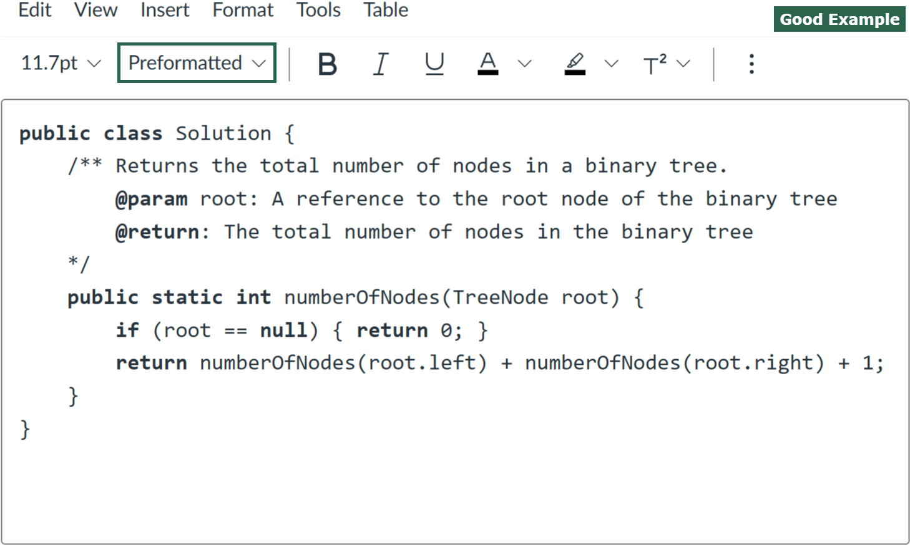
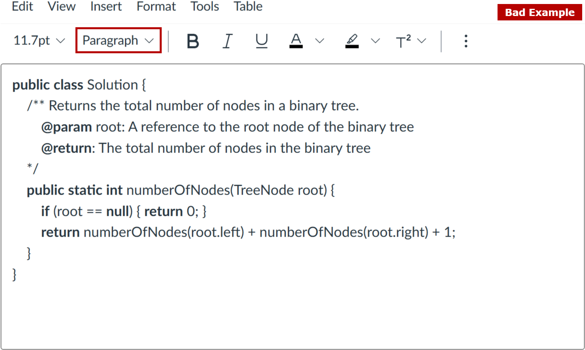

Department of Computer Science - Programming Classes (Java)
Instructions to Format Code in Canvas Answer Textbox
In the Canvas answer textbox, please select the Preformatted style. An example is given below:
Copy the code template the question provides for you to the answer textbox. An example is given below:
Add your code to answer the question.
1) Please note that correct code indentation is required. You will lose points if your code indentation is not right, regardless of the programming language you use.
2) Your code does not need to be colored.
If you are not in a closed-book exam and programming IDE is allowed to use, you can copy the code template to your programming IDE, write your code there, then copy your completed code to Canvas answer textbox.
Please review your code format before submitting your work on Canvas. A good example and a bad example are provided below:
 
Please feel free to contact your professor if you have any questions.